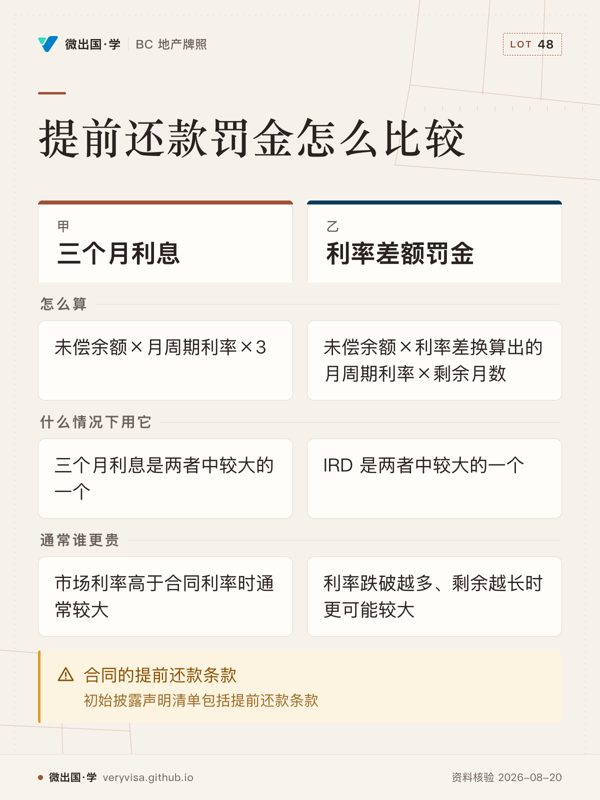

🃏 Flashcards · 3 闪卡 · 3 张 🖼 Slides · 2 幻灯 · 2 页 ✍️ Questions · 10 刷题 · 10 道
按揭金融 mortgage-finance P2 稳住 P2 Hold steady
ZH EN ZH + EN
先看这一章怎么考 First, how this chapter is tested
方向判断题：给出合同利率低于、高于或等于当下市场利率，问现金等价价格相对表面成交价偏低、偏高还是相等。真正考的是利率和现值反向：低于市场是折价，高于市场才是溢价。 Direction questions give a contract rate below, above, or equal to the current market rate, and ask whether the cash-equivalent price is below, above, or equal to the stated price. What they test is that the rate and the present value move in opposite directions: below the market is a discount, and only above the market is a bonus. 期数陷阱题：同一题放下合同期、摊还期和已经过去的时间，问折现的N，有时还问期末还欠什么。真正考的是剩余合同期的月数，以及部分摊还的到期余额要一起折现。 Period-count traps put the contractual term, the amortization, and the time already passed in the same item, ask for the N used in discounting, and sometimes also ask what is still owing at the end. What they test is the number of months left in the contractual term, and that the balance due at the end of a partial amortization is discounted together with the payments. 融资拆开题：全价报价里夹着卖方回按或承接旧按揭，问第二段只改哪一个数、未偿面值算不算现金、低利率能不能直接接手。真正考的是只换折现利率、承接照抄原还款，以及核贷和价格优势是两件事。 Financing-split questions place a vendor take-back mortgage or an assumable mortgage inside a full-price offer, and ask which single figure the second step changes, whether the outstanding face amount counts as cash, and whether a low rate can be taken over directly. What they test is that only the discount rate is changed, that an assumption copies the original payments, and that qualification and a price advantage are two separate things. 最常丢分的陷阱（看到题干信号就警觉） Traps that cost the most marks (watch for the signal in the stem)
折价溢价方向记反 Reversing discount and bonus 题干同时写出合同利率和市场利率谁高谁低，选项却说两种偏离都让现金等价价格上升，或都让它下降。 The stem states which of the contract rate and the market rate is higher, but an option says that both kinds of departure raise the cash-equivalent price, or that both lower it. 把摊还年限当成N Using the amortization as N 题干同时写出合同期、摊还期和已经过去的时间，并问折现的N是多少。 The stem states the contractual term, the amortization, and the time already passed, and asks what N is for the discounting. 面值当成现金等价 Treating face amount as the cash equivalent 题干写承接未偿余额、全价成交，或月供已经在合同里写死，选项却说余额本身就是这笔融资的现金价值。 The stem describes assuming an outstanding balance, a sale at the full price, or a monthly payment already fixed in the contract, but an option says the balance itself is the cash value of that financing. 本章考点页：导图、要点表、7 道带逐项解析的练习 →
本章地位 ：按揭金融五章（ch13–ch17）的收官篇，讲应用 ——同一份报价，
一旦掺进了低于或高于市场利率的融资安排（卖方回按、买方承接旧按揭），
表面的成交价就不再等于真实的经济价值。ch13 讲了利率换算，ch14/ch16 讲摊还表与未偿余额，
ch17 讲银行怎么核贷；本篇要用同一套工具回答一个不一样的问题：这份报价到底值多少钱 。
这一章几乎全是长青算法 ——公式与判断逻辑几十年不变，要下功夫的不是「考试口径哪句话过时了」，
而是算得对、讲得清 ，以及揪出考试口径脚注里一处已经不存在的机构名字。
核实日期：2026-09-05 ，出处见文末源表。
一、这一章要回答的问题：同一份报价，为什么"值"不一样多 本节回答 This section answers 融资偏离后面值能否直接比 Whether face value can be compared directly once the financing departs from the market 本章考题 1 Question 1
一份报价上写的成交价，只有在买家用自己另找的、按市场利率借来的钱 全款支付时，
才等于这笔交易的真实经济价值。一旦卖方自己借钱给买方（卖方回按，vendor take-back，VTB ），
或者买方接手了卖方名下那笔利率更低的旧按揭（承接按揭，assumed mortgage ），
成交价里就悄悄掺进了一份融资本身的价值 ——低于市场利率的贷款，本质上是卖方送给买方的一份"利息优惠券"；
高于市场利率的贷款，则是买方额外付给卖方的一份"风险补偿"。
制度设计上 ，这份价值不是凭空产生的：贷款人（不管是卖方还是原按揭权人）承诺按合同利率收款，
如果这个利率低于当下市场能拿到的利率，贷款人事实上在放弃 一部分本可以赚到的利息；
反过来，如果利率高于市场，借款人在多付 一部分本不必付的利息。这一放一收，
用现值（present value, PV）技术量化出来，就是现金等价价格（cash-equivalent price） ，
也叫这笔按揭的市场价值（market value of the mortgage） 。
报价的市场价值（现金等价价格） ＝ 现金首付 ＋ 按揭的市场价值
按揭的市场价值 ＝ 未来还款流（与到期余额，如有）按市场利率折现后的现值
底层逻辑 ：利率与现值之间是一把跷跷板——利率越高，同一串未来还款流现在值多少钱就越低；
利率越低，现值就越高。三种情形对应三种结果：
ℹ️
面值不等于市值
MLS® 或土地登记处记录的成交价（面值 ）是买卖双方名义上谈定的数字；
只要其中有一部分对价是低于或高于市场利率的按揭，这个面值就不是这笔交易的真实经济价值 。
评估师引用这类成交案例当可比案例（comparable）时，必须先剥离融资的价值，
否则会把"房子+理财产品"的组合价格误当成"房子"本身的价值。
节末检索小测 · 先别往回翻，凭记忆作答 Quick recall check: answer from memory before scrolling back
An appraiser wants to use a recent sale as a comparable for the real estate alone. Part of the stated price was a vendor take-back at a rate different from the market rate on the sale date. Which statement matches the course?
评估师想把一宗近期成交当作只针对房地产本身的可比案例。表面成交价里有一部分是卖方回按，其利率与成交当日的市场利率不同。哪一项符合课程？
a Use the stated price unchanged. A recorded price is the value of the real estate by definition. ✗ 错误。这是把面值当成房子本身的价值。登记或成交记录上的数字是面值（face value）。其中只要有偏离市场利率的融资，这个面值就不是房地产单独的真实经济价值。 Wrong. This treats face amount as the value of the house itself. The figure on the registration or the sale record is face value. Whenever the financing departs from the market rate, that face value is not the true economic value of the real estate alone.
b Remove the value of the financing first. Otherwise the comparable prices a house and a financial product as one. ✓ 正确。评估师引用这类成交当可比案例（comparable）时，必须先剥离融资的价值。否则会把房子加一份理财产品的组合价格，当成房子本身的价值。 Correct. When an appraiser uses this kind of sale as a comparable, the value of the financing must be stripped out first. Otherwise the combined price of a house plus a financial product is treated as the value of the house itself.
c Add the face amount of the take-back on top of the stated price whenever the contract rate is below the market. ✗ 错误。这是折价溢价方向记反，又把面值加了第二次。低于市场的融资使报价的市场价值低于表面成交价，不是在面值外面再加一笔本金。 Wrong. This reverses discount and bonus, and it adds the face amount a second time. Below-market financing makes the market value of the offer lower than the stated price. It does not add another sum of principal on top of face.
d Adjust the sale only when the take-back rate is above the market. A below-market rate does not affect a comparable. ✗ 错误。这是只处理溢价、放过折价。合同利率低于市场或高于市场，都会使面值偏离房地产本身的价值，两边都要先剥离再拿去比较。 Wrong. This adjusts only the bonus and leaves the discount alone. A contract rate below the market, and a contract rate above the market, both make face value depart from the value of the real estate itself. Both must be stripped out before the sale is used for comparison.
看答案与每个选项的解析 Show the answer and why each option is right or wrong 答案 Answer ：b
二、算之前先复习工具：月供与未偿余额怎么来 本节回答 This section answers 拉长摊还月供和利息怎么变 How the payment and the interest change when the amortization is lengthened 本章考题 2 Question 2
不管接下来分析的是卖方回按还是承接按揭，第一步永远相同：先按合同利率把这笔贷款的月供、
以及某个时点的未偿余额（outstanding balance, OSB）算清楚 ——这是 ch13 的利率换算与
ch14 摊还表工具的直接延伸，不重复推导，只重复使用。
示例一：摊还期怎么选，月供与总利息差多少
买家 Grace 打算借 $500,000 ，市场当前给出的报价是 j₂ = 5.00% （半年复利），按月还款。
她纠结的是选 25 年摊还还是 30 年摊还：
等价 j₁₂ ≈ 4.9487%（半年复利换算成月复利的周期利率）
25 年摊还（300 期）：月供 = $2,908.02，总还款 = $872,407.48，总利息 = $372,407.48
30 年摊还（360 期）：月供 = $2,668.45，总还款 = $960,643.22，总利息 = $460,643.22
两个方向都成立 ：30 年摊还比 25 年每月少还 $239.57 ，但整个还款期下来
多付 $88,235.74 的利息 ——这正是 ch13 那句"摊还期越长，月供越轻，总利息越贵"的具体数字版。
示例二：5 年期末的未偿余额（part-amortized 按揭最常问的数）
BC 实务里绝大多数住宅按揭是部分摊还 ——摊还期 25 年，合同期只签 5 年。
沿用 Grace 那笔 $500,000、25 年摊还的贷款，5 年（60 期）后 ：
未偿余额 OSB₆₀ = $442,537.54
5 年内已还本金 = $500,000 − $442,537.54 = $57,462.46
这个数字之所以重要 ：接下来无论分析卖方回按还是承接按揭，凡是"部分摊还、合同期短于摊还期"的贷款，
到期时要交割的都不是 $0，而是这个未偿余额（balloon payment ）。市场价值分析要折现的，
是"剩余的几十次月供"加上 "到期时的这一笔余额"，两样都要算，漏一样结果就是错的。
✕
折现时 N 取的是"剩余期数"，不是"剩余摊还年限"
如果这笔贷款是 5 年期、25 年摊还，且已经过去了 2 年，折现时的 N 是合同期还剩的 36 个月 ，
不是"摊还期总共还剩 23 年"。用错 N，市场价值会算出一个荒谬的数字。这是本章最容易在计算器上按错的一步。
ℹ️
30 年摊还在 2026 年不再是"考试口径没写的稀罕事"
ch17 已经登记过这一条：2024-12-15 起 ，首次购房者或购买从未有人住过的新建房的买家，
保险按揭可以做到 30 年摊还（此前保险按揭一般上限是 25 年）。这意味着 Grace 这样的场景
在 2026 年的柜台上真实存在，不是为了演示摊还期差异而虚构的对比。
节末检索小测 · 先别往回翻，凭记忆作答 Quick recall check: answer from memory before scrolling back
On the same loan amount and the same rate, a buyer compares a 25-year amortization with a 30-year amortization. Both are paid monthly. Which statement matches the course?
同一笔贷款、同一个利率，买方在比较25年摊还和30年摊还，都是按月还款。哪一项符合课程？
a The 30-year loan has both the lower monthly payment and the lower total interest. ✗ 错误。这是把月供和总利息记成一起下降。摊还期拉长时，月供变轻，总利息变贵，两个方向同时成立，不会一起变小。 Wrong. This treats the monthly payment and the total interest as falling together. When the amortization is lengthened, the monthly payment becomes lighter and the total interest becomes more expensive. Both directions hold at the same time. They do not both become smaller.
b The 30-year loan has the higher monthly payment and the lower total interest. ✗ 错误。两个方向都反了。期数变多，每一期付款下降，整段利息上升，不是单期付款上升、总利息下降。 Wrong. Both directions are reversed. When there are more periods, the payment each period falls and the interest over the whole term rises. It is not a higher payment each period and lower total interest.
c The 30-year loan has the lower monthly payment and the higher total interest. ✓ 正确。摊还期越长，月供越轻，总利息越贵。讲座中同一笔 $500,000、半年复利5.00%的贷款，25年月供 $2,908.02、总利息 $372,407.48，30年月供 $2,668.45、总利息 $460,643.22，每月少 $239.57，总利息多 $88,235.74。自2024-12-15起，首次购房或购买从未有人住过的新建房，保险按揭可以做30年摊还。 Correct. The longer the amortization, the lighter the monthly payment and the more expensive the total interest. In the lecture, the same loan of $500,000 at 5.00% compounded semi-annually has a 25-year payment of $2,908.02 and total interest of $372,407.48, and a 30-year payment of $2,668.45 and total interest of $460,643.22, which is $239.57 less each month and $88,235.74 more in total interest. From 2024-12-15, an insured mortgage may use a 30-year amortization for a first home purchase, or for the purchase of a newly built home that no one has lived in.
d The two amortizations produce the same total interest. Only the monthly payment changes. ✗ 错误。这是只看见月供、没看见利息账单。拉长摊还不是把同一笔利息切成更多份，总利息会明显增加。 Wrong. This sees only the monthly payment and misses the interest bill. Lengthening the amortization is not cutting the same interest into more pieces. Total interest increases by a clear amount.
看答案与每个选项的解析 Show the answer and why each option is right or wrong 答案 Answer ：c
三、卖方回按（VTB）：折价还是溢价的现金等价价格 本节回答 This section answers 折价是否等于这份报价无效 Whether a discount means this offer is invalid
卖方回按 指卖方自己当贷款人，把部分或全部房款借给买方，通常用在两种场景：
开发商为促销放出低息或免息贷款；或者卖方在信贷紧缩的市场里，为了促成交易，
接受买方分期付款而不是一次性拿到全部房款。贷款通常仍以按揭形式在产权上登记
（也可以结构成分期付款合同，见 ch15）。
图：报价的市场价值——这份报价到底值多少钱
卖方回按在 BC 的登记与优先权细节，见 ch15 ——本篇只需要记住一句话：
它多数情况下仍是一份登记在产权上的按揭，享有按揭应有的优先受偿地位，具体排序规则不在本章展开。
分析一份含卖方回按的报价，用第一节那条公式：
报价的市场价值 ＝ 现金首付 ＋ 按揭的市场价值
按揭的市场价值 ＝ 未来还款流（与到期余额）按"当前市场利率"折现的现值
计算步骤固定分两段：第一段 按合同利率验证或算出月供与到期余额（本章第二节的工具）；
第二段 换成市场利率，对同一串还款流（与到期余额）重新求现值。两段之间只换一个数字——利率——
其余输入原封不动。
折价还是溢价，看合同利率落在市场利率的哪一侧 ：合同利率低于市场利率时，
卖方事实上在放弃一部分本可以赚到的利息，报价的市场价值因此低于 表面成交价（折价）；
合同利率高于市场利率时（例如卖方认为买方信用较差、要求额外的风险补偿），
报价的市场价值高于 表面成交价（溢价）。哪一种情形都不代表报价"有问题"——
它只是提醒双方：这笔交易里，房地产本身的价值和融资安排的价值是两件分开的事 ，
持牌人的职责是把两者拆开讲清楚，具体这笔生意划不划算，仍然要看标的物本身的市场价值，
以及双方各自的处境与议价能力。
🔧
给卖方客户的说法，不是给他一个折现公式
卖方通常不关心 PV 公式，只想知道"我到底亏了还是赚了"。正确的表达方式是：
"这份报价里，你不只是在卖房子，还在卖一份理财产品——一份让买方比市场价省钱（或多付）的贷款。
这份理财产品值多少钱，取决于你的利率和现在银行给的利率差多少、差多久。"
这句话在卷面 上对应的是"计算现金等价价格"，在实务 里就是这一段大白话。
节末检索小测 · 先别往回翻，凭记忆作答 Quick recall check: answer from memory before scrolling back
A seller will carry part of the price at a rate below the market and does not want a formula. The seller asks whether that fact makes the offer a bad offer. The licensee has already separated the value of the house from the value of the loan. Which statement matches the course?
卖方准备以低于市场的利率把一部分房价借给买方，而且不想听公式。卖方问：这件事是不是说明这份报价不能要。持牌人已经把房子的价值和贷款的价值分开。哪一项符合课程？
a The offer is defective. A cash-equivalent price below the stated price means the parties must not proceed. ✗ 错误。这是把折价当成报价失效。折价只说明融资安排单独有一个价值。这笔生意划不划算，还要看标的物本身的市场价值，以及双方的处境和议价能力。 Wrong. This treats a discount as making the offer invalid. A discount only means the financing arrangement has a value of its own. Whether the deal is worthwhile still depends on the market value of the property itself, and on the two parties' situations and bargaining strength.
b Stop once the seller declines the formula. No plain-language explanation is owed if the seller will not read the calculation. ✗ 错误。这是把公式当成唯一能说的话。卖方通常不关心现值（present value）公式。卷面上的计算，实务里要说成：你还在卖一份理财产品，值多少取决于利率差多少、差多久。 Wrong. This treats the formula as the only thing that can be said. A seller usually does not care about the present value formula. The calculation on the exam page is said in practice this way: you are also selling a financial product, and what it is worth depends on how far the rates differ and for how long.
c Tell the seller the take-back is unsecured. A loan from the seller cannot be a mortgage and has no priority. ✗ 错误。这是把卖方回按说成无担保欠条。它多数仍是登记在产权上的按揭，享有按揭的优先受偿地位。具体排序不在本章展开，但不能说它没有按揭地位。 Wrong. This describes a vendor take-back mortgage as an unsecured IOU. In most cases it is still a mortgage registered on title, with a mortgage's priority for payment. The particular ranking is not developed in this chapter, but it cannot be said to have no status as a mortgage.
d Explain that the seller is selling a house and a loan. The discount describes the loan and does not, by itself, decide the property. ✓ 正确。给卖方的说法是：这份报价里还有一份让买方比市场省钱的贷款，这份理财产品值多少，看你的利率和市场上的利率差多少、差多久。折价（discount）描述的是融资，不是宣布房子这笔交易不能做。 Correct. What is said to the seller is this: the offer also contains a loan that saves the buyer money compared with the market, and what that financial product is worth depends on how far your rate differs from the market rate and for how long. A discount describes the financing. It does not declare that the transaction in the house cannot proceed.
看答案与每个选项的解析 Show the answer and why each option is right or wrong 答案 Answer ：d
四、承接按揭（Assumable Mortgage）：买的不只是房子，还买了一份理财产品 本节回答 This section answers 低息承接是否还要重新核贷 Whether a below-market assumption still needs a fresh qualification 本章考题 3 Question 3
按揭承接 指买方接手卖方名下已经存在的按揭，继续按原合同条款还款。
买方图的是这笔旧按揭的合同利率低于当前市场利率；卖方的动机则可能是避免提前还清旧贷款要付的
罚金，或者借此提升房子的市场吸引力（利率上行周期里尤其常见——旧的低利率对买方格外有价值）。
承接按揭和卖方回按用的是同一套现值技术 ，只有两处不同：第一 ，这笔贷款已经存在一段时间，
折现时的 N 是合同期里剩下的期数 ，不是从零开始的一整个合同期；第二 ，月供与到期余额
通常已经由原合同定死、直接抄下来即可，不需要重新计算（除非要核对原合同数字是否正确）。
情景：Marco 想承接 Priya 的旧按揭
三年前，Priya 为她的物业安排了一笔 $400,000 的按揭：合同利率 j₂ = 4.00% ，
25 年摊还 、5 年合同期 、按月还款。
月供 = $2,104.08
36 期（3 年）后未偿余额 = $370,167.14 ← 这就是买方 Marco 现在要承接的面值
60 期（5 年、合同期满）时的到期余额 = $348,215.72
合同期还剩 60 − 36 = 24 期
Priya 现在把房子卖给 Marco，Marco 提出承接这笔按揭剩余的 24 期还款与到期余额。
当前 2 年期左右的可比按揭市场利率是 j₂ = 6.00% ——比 Priya 这笔旧按揭高出不少。
按市场利率折现这剩下的 24 期还款与到期余额：
市场价值 ＝ PV（24 期 × $2,104.08，加到期余额 $348,215.72，按 j₂ = 6.00% 折现）
＝ $356,894.80
现值优势 ＝ 面值 $370,167.14 － 市场价值 $356,894.80 ＝ $13,272.34
这笔承接按揭对 Marco 值 $13,272.34 ——如果 Marco 自己另找一家银行，按 6.00% 的市场利率、
同样的还款额度去借钱，只能借到 $356,894.80。Priya 应该把这笔理财产品的价值算进报价里，
而不是把面值 $370,167.14 直接当成"这笔按揭该收多少现金"。卖不卖、要不要为这份优势多要钱 ，
仍然是谈判问题，PV 计算只给出一个起点数字。
买方视角同样重要 ：Marco 拿到的是"利率优势"，但他要评估自己是否符合原贷款人的核贷条件——
多数现行按揭合同要求新借款人重新核贷（qualify）才能把名字换上产权，这一步与 ch17 的
两把尺子（贷款价值比、偿债比）完全一样，承接旧利率不等于跳过核贷。
节末检索小测 · 先别往回翻，凭记忆作答 Quick recall check: answer from memory before scrolling back
A buyer wants to assume the seller's mortgage because its contract rate is well below the market. The original lender requires a new borrower to qualify again. The buyer's income and credit fail that lender's tests. Which statement matches the course?
买方想承接卖方名下的按揭，因为合同利率明显低于市场。原贷款人要求新借款人重新核贷。买方的收入和信用达不到该贷款人的标准。哪一项符合课程？
a The assumption is already approved. A below-market rate replaces the lender's qualification. ✗ 错误。这是把低利率当成自动获批。承接旧利率不等于跳过核贷，多数现行合同要求新借款人向原贷款人重新申请。 Wrong. This treats a low rate as an automatic approval. Taking over the old rate is not the same as skipping qualification. Most current contracts require the new borrower to apply again to the original lender.
b The buyer qualifies by putting the contract rate in place of the loan-to-value and debt-service tests. ✗ 错误。这是用合同利率替换两把尺子。核贷仍然看贷款价值比（loan-to-value ratio）和偿债比（debt-service ratio）。利率优势不能代替这两项测试。 Wrong. This replaces the two measures with the contract rate. Qualification still looks at the loan-to-value ratio and the debt-service ratio. A rate advantage cannot stand in for those two tests.
c Rate advantage and qualification are separate; if the buyer fails the lender's test, the assumption may not go ahead. ✓ 正确。买方拿到的是利率优势，但仍要看自己是否符合原贷款人的核贷条件。收入或信用不够时，看起来很划算的承接可能根本走不通。持牌人要把这两件事分开讲。 Correct. What the buyer receives is a rate advantage, but the buyer must still meet the original lender's qualification conditions. If income or credit is not enough, an assumption that looks worthwhile may not go ahead at all. The licensee must explain the two things separately.
d The seller's original approval transfers with title. The lender may not reassess the new borrower. ✗ 错误。这是把原来的批准当成随产权一起过户。名字要换到新借款人身上时，贷款人可以要求重新核贷，原批准不会自动转移。 Wrong. This treats the original approval as transferring with title. When the name is to change to the new borrower, the lender may require a fresh qualification. The original approval does not transfer by itself.
看答案与每个选项的解析 Show the answer and why each option is right or wrong 答案 Answer ：c
五、可携式按揭（Portable Mortgage）：把低利率带去下一套房 本节回答 This section answers 低利率能否不测就整笔搬走 Whether a low rate can be moved in full without a new test
可携式按揭 允许借款人卖掉现在的房子、买下一套房时，把现有按揭的利率、条件原样"搬"过去，
免去因低利率而放弃旧合同、或重新申请新按揭产生的手续费。这项功能大幅削弱了"用承接按揭当卖房卖点"
的吸引力——如果卖方能把低利率带走接着用，就没必要留给买方承接。
关键提醒 ：能不能"搬得动"取决于借款人当下 是否仍然符合核贷条件，尤其是 ch17 讲过的
压力测试 ——哪怕只是合同签订后的第二天要搬迁，也要按现行合格利率重新测算。
测算结果如果比原合同的可贷额度低，只能搬走一部分余额；不够的部分需要另外补足首付，
或者干脆解约旧贷款、重新申请一笔新的五年期贷款（但解约罚金通常不低，市场惯例常见在贷款余额的
百分之几，具体比例因贷款人而异，本篇不给单一快照数）。
节末检索小测 · 先别往回翻，凭记忆作答 Quick recall check: answer from memory before scrolling back
The day after signing, a borrower wants to sell and move the existing below-market rate and terms to the next home. Under today's stress test the borrower qualifies for less than the balance. This chapter gives no single breakage percentage. Which statement is correct?
签约次日，借款人想卖掉现在的房子，把现有的低于市场的利率和条件原样搬到下一套房。按今天的压力测试，借款人够资格借到的金额低于余额。本章没有给出单一的解约罚金比例。哪一项正确？
a The full balance moves. A stress test applies only when the mortgage is first signed, not when it is moved. ✗ 错误。这是把可携当成自动生效。能不能搬得动，取决于借款人当下是否仍然符合核贷，尤其是压力测试（stress test）。即便是签约后的第二天，也要按现行合格利率重新测算。 Wrong. This treats portability as taking effect by itself. Whether the mortgage can be moved depends on whether the borrower still qualifies today, especially under the stress test. Even on the day after signing, it must be recalculated at the current qualifying rate.
b The low rate cannot be moved by the borrower. Portability only lets a buyer assume the seller's mortgage. ✗ 错误。这是把可携和承接记成同一件事。可携式按揭（portable mortgage）是借款人自己把现有条件搬到下一套房。正因为它搬得走，用承接当卖点的吸引力会下降。 Wrong. This treats a portable mortgage and an assumption as the same thing. A portable mortgage is the borrower moving the existing terms to the next home. Because those terms can be moved, the appeal of using an assumption as a selling point falls.
c The borrower must break the whole loan, and this chapter fixes the penalty as one share of the balance. ✗ 错误。这是给本章没有的单一比例。解约罚金因贷款人而异，本篇不给单一快照数。测算不够时，也可以只搬走仍符合资格的部分，差额另补首付，不是只能整笔解约。 Wrong. This supplies a single percentage that this chapter does not give. The breakage penalty differs by lender, and this chapter gives no single snapshot figure. If the test falls short, only the part that still qualifies may be moved, and the shortfall is covered by more cash down. Breaking the whole loan is not the only path.
d Only the qualifying amount moves; the shortfall needs more cash down, or the old loan is broken for a new five-year loan. ✓ 正确。压力测试若低于原合同的可贷额度，只能搬走一部分余额。不够的部分需要另外补足首付，或者解约旧贷款、重新申请一笔新的五年期贷款。低利率不会整笔自动跟着走。 Correct. If the stress test comes out below the amount the original contract could support, only part of the balance can be moved. The shortfall needs additional cash down, or the old loan is broken and a new five-year loan is applied for. The low rate does not follow by itself for the whole balance.
看答案与每个选项的解析 Show the answer and why each option is right or wrong 答案 Answer ：d
六、折价与溢价按揭：经纪费、点数与资金实际成本（COFA） 本节回答 This section answers 没有额外费用时披露何时给 When the disclosure is given if there is no extra fee
除了因利率高低产生的折价或溢价，实际操作里还有一类更常见的价值调整——手续费 。
贷款人加价（lender bonus） 是贷款人为提升自己收益额外收取的费用；
经纪费（brokerage fee） 是按揭经纪撮合贷款收取的费用。两者都可能从贷款本金里扣除
（借款人实际到手的钱比合同面值少，这种安排叫折价，discount ），也可能加到 贷款面值上
（借款人签的合同金额比实际到手的钱多，这种安排叫加价，bonus ）——不管哪种做法，
效果都一样：借款人实际拿到的钱变少了，但还款义务没变 ，这意味着借款人实付的真实利率，
高于合同上写的那个数字。这个真实利率叫资金实际成本（cost of funds advanced, COFA） 。
情景：Owen 通过经纪 Nadia 借一笔私人二按
Owen 需要一笔 $300,000 的私人二按，合同条款是 j₂ = 5.50% 、25 年摊还 、按月还款，
计算出的月供是 $1,831.17 。经纪 Nadia 在放款前从本金里扣掉 2 点（2%）的折扣费 ：
实际到手金额 ＝ $300,000 × (1 − 2%) ＝ $294,000
Owen 按月还的是基于 $300,000、$1,831.17 的月供，但他只拿到了 $294,000。
把这串还款流按 $294,000 反推真实利率：
月周期利率 ≈ 0.4705%
换算成 j₁₂ ≈ 5.6462%
换算成 j₂（等价半年复利） ≈ 5.7130%
换算成 EAR（等价年利率） ≈ 5.7946%
Owen 合同上写的是 5.50%，但他真正承担的资金成本是 j₂ ≈ 5.71% ——多出的这一截，
就是那 2 点折扣费摊进 25 年还款期里的效果。期限越短，这个放大效应越明显 ：
同样一笔折扣费，摊在 1 年期里比摊在 25 年期里，对真实利率的推高幅度大得多，
这也是为什么短期私人贷款经常报出看起来很高的实际成本。
⚠️
COFA 不是法律要求披露的数字
法律要求披露的是年利率百分比（Annual Percentage Rate, APR） ——合同利率加非利息性金融费用，
这是《商业行为与消费者保护法》(Business Practices and Consumer Protection Act, BPCPA) 明文要求的；
COFA 不是法定披露项目 ，是持牌人或借款人自己用来横向比较不同贷款方案的分析工具。
把"我帮你算的资金实际成本"说成"这是银行必须告诉你的数字"，是这一格常见的说法错误。
BPCPA 的披露要求 ：只要借款人借款的主要目的是个人、家庭或生活用途（几乎覆盖全部住宅按揭与私人二按），
不论贷款人或经纪是否额外收费，都必须给出书面披露声明；按揭贷款的披露声明必须在借款人承担合同义务
或付款前至少两个营业日 给出（BPCPA s.66(3)；借款人可按规例规定的条件放弃这段期间，s.66(4)）。s.84 （固定信贷初始披露）
要求的内容清单现行仍然是 ：声明生效日、计息起算日与宽限期、期限与摊还期、
初始未偿余额及其构成、全部放款总额、提前还款的权利与罚金说明、总借款成本、
年利率与复利方式、利率变动方式（若可变）、APR 、其他费用的性质与金额、
违约条款的性质、担保物说明——这一份清单，考试口径©2020 列的内容与 2026 现行文本逐项核对未见实质差异 。
考试口径脚注里一处已经不存在的机构 ：考试口径在讨论 APR 更多信息去处时，脚注建议读者查阅
Financial Institutions Commission of BC（FICOM） 的网站。BCFSA 官方2020财务报表注1明确：2019-11-01 ，BCFSA 接替 FICOM 的金融机构、养老金与按揭经纪监管职能（BC Financial Services Author… ）。地产监管 的 RECBC／OSRE 整合则在 2021-08-01 完成（BC Financial Services Author… ）。介绍现行机构用 BCFSA；讲历史可以保留 FICOM。正式考试是否涉及机构名，应查注册课程现行材料，不能由旧版脚注推断。
节末检索小测 · 先别往回翻，凭记忆作答 Quick recall check: answer from memory before scrolling back
A mortgage is mainly for household use. No brokerage fee and no lender bonus will be charged. The borrower is about to sign and become bound. Which timing matches the course?
一笔按揭的主要用途是家庭生活。不收经纪费，也不收贷款人加价。借款人即将签字并承担合同义务。披露的时点哪一项符合课程？
a The statement may be given on the day the borrower becomes bound. A loan with no added fee has no waiting period. ✗ 错误。这是把“没有额外费用”当成可以当天补披露。个人、家庭或生活用途的借款，不论是否另收费，都要书面披露。按揭声明必须在承担义务或付款之前给出，不是签字当天才交。 Wrong. This treats the absence of an extra fee as permission to give the disclosure on the same day. A loan for personal, family, or household use must be disclosed in writing whether or not an extra fee is charged. The mortgage statement must be given before the borrower is bound or pays. It is not handed over on the day of signing.
b Give it at least two business days before the borrower is bound or pays, unless the period is waived on the terms the regulation allows. ✓ 正确。按揭贷款的披露声明必须在借款人承担合同义务或付款前至少两个营业日给出，依据是《商业行为与消费者保护法》（Business Practices and Consumer Protection Act）第66(3)条。借款人可按规例规定的条件放弃这段期间，第66(4)条。没有另收费，也不能取消这个时点。 Correct. The mortgage disclosure statement must be given at least two business days before the borrower is bound by the contract or makes a payment, under section 66(3) of the Business Practices and Consumer Protection Act. The borrower may waive that period on the conditions the regulation sets, under section 66(4). The absence of an extra fee does not remove this timing.
c Two calendar weeks are required before the borrower is bound. Two business days is only the rule for a commercial loan. ✗ 错误。这是把两个营业日改成两个星期，又把适用对象说反。本章的期间是至少两个营业日，而且家庭用途的住宅按揭正落在这条规则里。 Wrong. This changes two business days into two weeks and reverses who the rule applies to. The period in this chapter is at least two business days, and a residential mortgage for household use falls inside this rule.
d A statement is required only when the cost of funds advanced exceeds the contract rate. No points means no statement. ✗ 错误。这是把资金实际成本（cost of funds advanced, COFA）当成披露开关。COFA不是法定披露项目，也不是“要不要给声明”的条件。没有扣点的住宅按揭同样要披露。 Wrong. This treats the cost of funds advanced (COFA) as the switch for whether disclosure is given. The COFA is not a required disclosure item, and it is not the condition for whether a statement must be given. A residential mortgage with no points must be disclosed as well.
看答案与每个选项的解析 Show the answer and why each option is right or wrong 答案 Answer ：b
七、提前还款罚金：三个月利息 vs 利率差额罚金（IRD） 本节回答 This section answers 不满五年有无法定提前还款权 Whether a term under five years carries a legal right to prepay 本章考题 4 Question 4
封闭式按揭合同期不满 5 年时，贷款人在法律上没有义务允许借款人提前全额还清 ；
实务里绝大多数贷款人仍然允许，但要收一笔罚金，金额取三个月利息 与
利率差额罚金（Interest Rate Differential, IRD） 两者中较大的一个 。
三个月利息罚金 ＝ 提前还款时的未偿余额 × 月周期利率 × 3
IRD 罚金 ＝ 未偿余额 × （合同利率与当前可比期限市场利率之差换算出的月周期利率）× 合同期剩余月数
情景：Devon 借款两年后想提前还清按揭
Devon 两年前借了 $350,000 ，合同利率 j₂ = 6.00% 、20 年摊还 、5 年合同期 ，按月还款。
他想在第 2 年末（第 24 期） 提前还清全部余额：
第 24 期时的未偿余额 = $330,580.29
三个月利息罚金 = $330,580.29 × 月周期利率 × 3 ≈ $4,897.83
当前 3 年期可比贷款市场利率是 j₂ = 4.50%，比 Devon 的合同利率低 1.50 个百分点，
合同期还剩 60 − 24 = 36 个月：
IRD 罚金 = $330,580.29 × （1.50% 利率差换算出的月周期利率）× 36 ≈ $14,829.84
两者取大者 → IRD 罚金 $14,829.84
Devon 提前还清要交的总额 = $330,580.29 + $14,829.84 = $345,410.13
这个结果符合直觉 ：市场利率跌破合同利率越多、剩余期数越长，IRD 就越可能远大于三个月利息——
贷款人算的是"如果你现在走了，我要把这笔钱按现在更低的利率重新放出去，少赚多少利息"，
这正是 IRD 的经济含义。反过来，如果市场利率高于 合同利率，IRD 通常比三个月利息小，
贷款人几乎总是选择收三个月利息这个更简单、对借款人更友好的选项。
节末检索小测 · 先别往回翻，凭记忆作答 Quick recall check: answer from memory before scrolling back
An individual signed a closed mortgage with a term shorter than five years. The term has not ended. The borrower demands to pay the loan off in full and says the lender must accept the outstanding balance with no penalty, as a legal duty. Which statement matches the course?
一名个人借款人签了封闭式按揭，合同期短于五年，现在合同期还没结束。借款人要求一次还清，并说贷款人在法律上必须按未偿余额免罚金接受。哪一项符合课程？
a The lender must accept that payout. Every closed mortgage may be prepaid at the outstanding balance alone once payments have begun. ✗ 错误。这是把实务中的通融写成法定义务。合同期不满五年的封闭式按揭，贷款人在法律上没有义务允许提前全部还清。已经开始还款，并不产生这个义务。 Wrong. This writes a practical accommodation as a legal duty. On a closed mortgage with a term of less than five years, the lender has no legal duty to allow a full early payout. The fact that payments have already begun does not create that duty.
b The lender has no legal duty to allow a full payout during this term. Most lenders allow it in practice and then charge a penalty. ✓ 正确。不满五年的封闭式合同，法律上可以不让借款人提前全部还清。实务里绝大多数贷款人仍然允许，但要收罚金，金额取三个月利息和利率差额罚金（Interest Rate Differential, IRD）中较大的一个。 Correct. On a closed contract of less than five years, the law allows the lender to refuse a full early payout. In practice the great majority of lenders still allow it, but they charge a penalty equal to the greater of three months' interest and the Interest Rate Differential (IRD).
c The Interest Act already gives this borrower a right to prepay with three months' interest, because some time has passed since funding. ✗ 错误。这是把满五年的权利提前用了。《利息法》第10条是满五年后，个人借款人可以提前还清并加三个月利息。这笔合同期本身不满五年，五年也还没满，这一条还没有给借款人这个权利。考试口径与现行文本在这一条上没有冲突。 Wrong. This uses the five-year right too early. Section 10 of the Interest Act says that after five years an individual borrower may prepay and add three months' interest. This contractual term is itself shorter than five years, and five years have not yet run, so that section has not yet given the borrower this right. The exam wording and the current text do not conflict on this point.
d The lender must allow the payout and must choose the smaller of the two penalties, because the term is under five years. ✗ 错误。这是罚金取错那一档，又把“没有义务”说成“必须允许并且挑较轻的”。若实务中允许提前还清，收取的是两者中较大的一个，不是较小的一个。 Wrong. This picks the wrong penalty, and it turns the absence of a duty into a duty to allow the payout and to pick the lighter one. If an early payout is allowed in practice, what is charged is the greater of the two, not the smaller.
看答案与每个选项的解析 Show the answer and why each option is right or wrong 答案 Answer ：b
八、柜台上怎么做 本节回答 This section answers 差额罚金能不能凭经验来估 Whether the differential penalty can be estimated from experience
看到含卖方回按或承接按揭的报价，先问三个数 ：合同利率、剩余期数（不是剩余摊还年限）、
到期余额（如果是部分摊还）。三个数不全，市场价值算不出来。区分"这份报价值多少"与"这套房子值多少" ——含融资优惠的报价，面值往往偏离房地产本身的市场价值，
两件事分开谈，才能帮客户判断到底是好交易还是纸面好看的交易。私人二按或折扣类贷款，主动核对 BPCPA 披露有没有按时给到 ——披露声明必须在借款人
承担合同义务前至少两个营业日给出，这是持牌人和经纪都应该留意的合规节点，不是经纪一个人的事。提到监管机构一律用 BCFSA ，客户材料或旧资料里出现 FICOM、fic.gov.bc.ca 一类字样，
提醒对方这是至少五年前的旧信息。提前还款罚金不要凭经验估 ，一律建议客户找贷款人书面确认 IRD 的具体算法——不同贷款人
对"当前可比市场利率"的取法不完全一致，这是全章唯一没有统一标准答案的一格。承接按揭前提醒买方仍要核贷 ，可携式按揭前提醒卖方仍要过压力测试——低利率是买来的，
核贷条件不是。
节末检索小测 · 先别往回翻，凭记忆作答 Quick recall check: answer from memory before scrolling back
A client asks a licensee to estimate, from experience, the interest rate differential on an early payout. Two lenders do not define the current comparable market rate in the same way. Which response matches the course?
客户请持牌人凭经验估算一笔提前还款的利率差额罚金。两家贷款人对“当前可比市场利率”的取法并不相同。哪一种回应符合课程？
a Quote the larger of a rough three-month figure and a rough differential. Experience is the standard method in this chapter. ✗ 错误。这是凭经验估本章明确不要估的数。利率差额罚金里的“当前可比市场利率”，贷款人之间并不统一，经验数字不是标准答案。 Wrong. This estimates from experience a figure this chapter expressly says not to estimate. The current comparable market rate inside the Interest Rate Differential is not chosen the same way by every lender. A figure from experience is not the standard answer.
b Tell the client this chapter fixes one market rate for every lender, so one differential fits every closed mortgage. ✗ 错误。这是把没有统一答案的一格说成有统一利率。不同贷款人的取法不完全一致，不能把某一家的算法说成所有贷款人共用。 Wrong. This treats an item that has no single answer as if it had one rate for every lender. Different lenders do not choose the rate in exactly the same way. One lender's method cannot be described as shared by every lender.
c Advise the client to get that lender's written confirmation of the calculation. Do not substitute an estimate. ✓ 正确。提前还款罚金不要凭经验估，应让客户向贷款人书面确认利率差额罚金（Interest Rate Differential, IRD）的具体算法。这一格是全章唯一没有统一标准答案的地方。 Correct. Do not estimate a prepayment penalty from experience. Have the client get that lender's written confirmation of the exact method for the Interest Rate Differential (IRD). This is the only place in the whole chapter that has no single standard answer.
d Stay silent. Only a mortgage broker may mention a prepayment charge, so a trading-services licensee must not raise it. ✗ 错误。这是把“不要自己估”听成“完全不能提”。柜台要做的是请客户向贷款人书面确认，不是对罚金保持沉默。 Wrong. This hears do not estimate it yourself as do not mention it at all. What is done at the counter is to ask the client to get written confirmation from the lender. It is not to stay silent about the penalty.
看答案与每个选项的解析 Show the answer and why each option is right or wrong 答案 Answer ：c
九、两个容易踩空的场景 本节回答 This section answers 全价报价要不要接受前算账 Whether the figures on a full-price offer must be worked before acceptance
场景一：卖方只看到面值，没看到自己在送钱 。一位卖方接受了一份"全价"报价，
但其中一大部分是卖方自己按低于市场的利率回按给买方的按揭。卖方一开始很满意"全价成交"，
直到持牌人算出这笔按揭的市场价值比面值低了一截，才意识到自己实际上是在折价 卖房，
只是折价的部分被包装成了"慷慨的融资条件"。持牌人的职责是在卖方接受报价之前 把这笔账算清楚，
让卖方带着完整信息去谈，而不是等交易完成后才发现自己让利更多。
场景二：买方以为承接的低利率是白捡的，没算核贷这一步 。买方看中一套房，卖方名下有一笔
利率明显低于市场的旧按揭，买方非常想直接承接。但承接按揭不等于自动获批 ——多数现行按揭合同
要求新借款人向原贷款人重新申请核贷，套用的仍是 ch17 那两把尺子。如果买方的收入或信用状况
在原贷款人眼中不够格，这笔"看起来很划算"的承接可能根本走不通，持牌人需要提前提醒买方
把核贷这一步和融资本身的价值优势分开评估，不要把"利率低"当成"一定能接手"的保证。
节末检索小测 · 先别往回翻，凭记忆作答 Quick recall check: answer from memory before scrolling back
A seller is ready to accept a full-price offer today. A large part of the price is a vendor take-back at a rate below the market. The seller says the full price means nothing was given away. When must the licensee put the financing figures in front of the seller?
卖方今天就准备接受一份全价报价。价款里很大一部分是低于市场利率的卖方回按。卖方说，全价就表示没有让利。持牌人应当在什么时候把这笔融资账算给卖方看？
a After completion. The concession can be explained once the price can no longer change. ✗ 错误。这是等交易完成才发现让利。卖方那时已经失去谈判机会。账要在接受之前算清。 Wrong. This waits until the transaction is complete to discover the concession. By then the seller has already lost the chance to negotiate. The figures must be worked out before acceptance.
b Before the seller accepts. A full stated price can still hide a discount packaged as generous financing. ✓ 正确。卖方可能只看到全价成交，没看到低于市场的回按是在折价（discount）卖房，让利被包装成慷慨的融资条件。持牌人要在卖方接受报价之前把账算清，让卖方带着完整信息去谈。 Correct. The seller may see only a full-price sale and not see that a below-market take-back is a sale of the house at a discount, with the concession packaged as generous financing terms. The licensee must work the figures out before the seller accepts the offer, so the seller negotiates with the full information.
c Only if the take-back rate is above the market. A below-market rate at a full stated price needs no comment. ✗ 错误。这是把本场景的利率方向看反了。这里正是低于市场的回按配上全价。利率高于市场是另一种溢价，不是可以沉默的理由。 Wrong. This reverses the direction of the rate in this situation. What is here is a below-market take-back paired with a full price. A rate above the market is a different case, a bonus. It is not a reason to stay silent.
d Never, once the buyer has been told to qualify. The buyer's qualification replaces the explanation owed to the seller. ✗ 错误。这是用另一个场景替换这一场景。买方是否核贷通过，不能代替给卖方算清融资让利。两件事要分开讲。 Wrong. This replaces this situation with another one. Whether the buyer passes qualification cannot stand in for working out the financing concession for the seller. The two things must be explained separately.
看答案与每个选项的解析 Show the answer and why each option is right or wrong 答案 Answer ：b
术语双语对照
考试口径 vs 现行对照表 本节回答 This section answers 清单和利息法要不要改卷面 Whether the list and the Interest Act points must be rewritten on the paper 本章考题 5 Question 5
第 2、3 条同样是提醒 ：不是每条「考试口径 vs 现行」的对照都会发现冲突，这两条对照现行条文后，
确认考试口径没有错。
节末检索小测 · 先别往回翻，凭记忆作答 Quick recall check: answer from memory before scrolling back
A candidate compares the course manual with the current statute and wants to know which points to rewrite before answering an exam question from the manual. Which statement matches the course?
考生把课程手册和现行条文对照，想知道答卷之前哪些点必须改写。哪一项符合课程？
a Replace the initial disclosure list. The manual's list no longer matches the current statute in substance. ✗ 错误。这是把没有冲突的清单改掉。固定信贷初始披露清单，考试口径所列与现行文本逐项核对未见实质差异，包括生效日、计息起算与宽限、期限与摊还、初始余额及其构成、放款总额、提前还款权利与罚金、总借款成本、年利率与复利方式、可变利率如何变动、年利率百分比、其他费用、违约条款和担保物说明。 Wrong. This rewrites a list that has no conflict. On the initial disclosure list for fixed credit, an item-by-item check of the exam list against the current text shows no difference in substance. The items are the effective date, when interest starts and any grace period, the term and the amortization, the opening balance and what it is made of, the total amount advanced, prepayment rights and penalties, the total cost of borrowing, the annual interest rate and the method of compounding, how a variable rate changes, the Annual Percentage Rate, other charges, default terms, and a description of the security.
b Keep the manual's disclosure list and its Interest Act points on compounding and five-year prepayment; those still match. ✓ 正确。初始披露清单，以及《利息法》关于按揭利率按年或半年复利披露、满五年后个人借款人可提前还清并加三个月利息的表述，对照现行后都没有冲突。考试在这两条上按手册作答即可。真正过时的是脚注里的旧机构名，不是这份清单。 Correct. The initial disclosure list, and the Interest Act wording on disclosing a mortgage rate as compounded annually or semi-annually and on an individual borrower's right after five years to prepay and add three months' interest, do not conflict with the current text. On the exam, those two points are answered from the manual. What is actually out of date is the old body named in the footnote, not this list.
c Rename every regulator in an exam answer to BCFSA, including a question that asks for the words of the old footnote. ✗ 错误。这是用现行机构替换卷面脚注。对客户介绍现行机构才说 BCFSA。题目若要课程手册脚注的原文，脚注写的是 Financial Institutions Commission of BC（FICOM）。现行已由 BCFSA 于2019-11-01接替金融机构、养老金与按揭经纪监管，并于2021-08-01整合地产监管。 Wrong. This replaces the footnote on the paper with the current body. BCFSA is what is said when telling a client about the current regulator. If the question wants the words of the course-manual footnote, the footnote names the Financial Institutions Commission of BC (FICOM). BCFSA took over regulation of financial institutions, pensions, and mortgage brokers on 2019-11-01, and integrated real estate regulation on 2021-08-01.
d Drop the three-month interest right after five years. That right was removed, so the manual is wrong on prepayment. ✗ 错误。这是把原样现行的条文当成已经删除。《利息法》第10条仍然是满五年后，个人借款人可以提前还清并加三个月利息。卷面不要把它划掉。 Wrong. This treats a provision that is still current, word for word, as if it had been deleted. Section 10 of the Interest Act is still that after five years an individual borrower may prepay and add three months' interest. Do not strike that out of the exam answer.
看答案与每个选项的解析 Show the answer and why each option is right or wrong 答案 Answer ：b
源表（本篇判据）
本篇不给的数字 ：解约罚金约占贷款余额的比例（各贷款人条款不同）；无保险私人二按当前普遍的点数与
利率区间（波动快）。BPCPA s.85–s.89（利率变动、本金增加、展期、续期的补充披露）本篇不展开。
本页知识卡 不看正文也能拿到这一节的核心内容：先看导读，再看图。点图放大，左右翻页。
放大 ⤢ 三条对照里，两条确认考试口径没有错。 先看 先看右列：一处旧名变化，两处是在核实后确认规则仍沿用。易漏 FICOM 只作历史对照；另外两项不是冲突，不能因为看起来稳定就跳过核实。下一步 去讲义查看 UWS 出处，再用练习区分旧称与仍沿用的规则。详情与分享 → 
放大 ⤢ 市场利率跌得越多、剩余越长，IRD 越可能更大。 先看 先看最后一行：利率方向不同，较大的那一边也会变。易漏 具体合同的提前还款条款要单独核对，不能只凭比较公式判断实际罚金。下一步 去练习换不同市场利率情景，再带合同条款找持牌专业人士复核。详情与分享 → 本站依据官方原文自撰 · 出处见正文链接